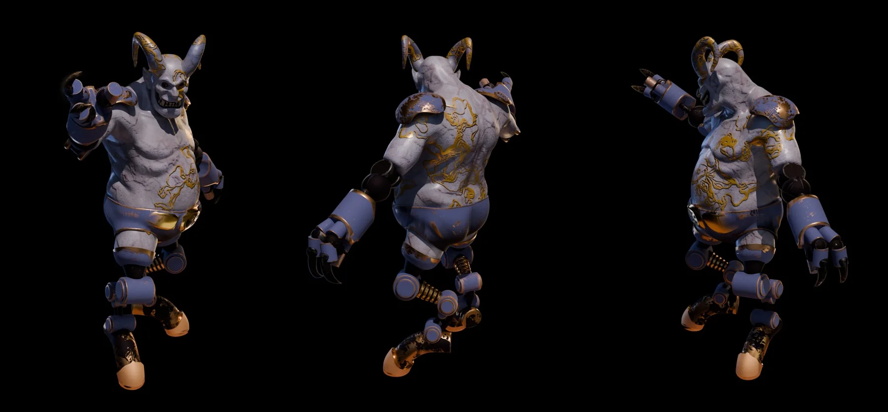
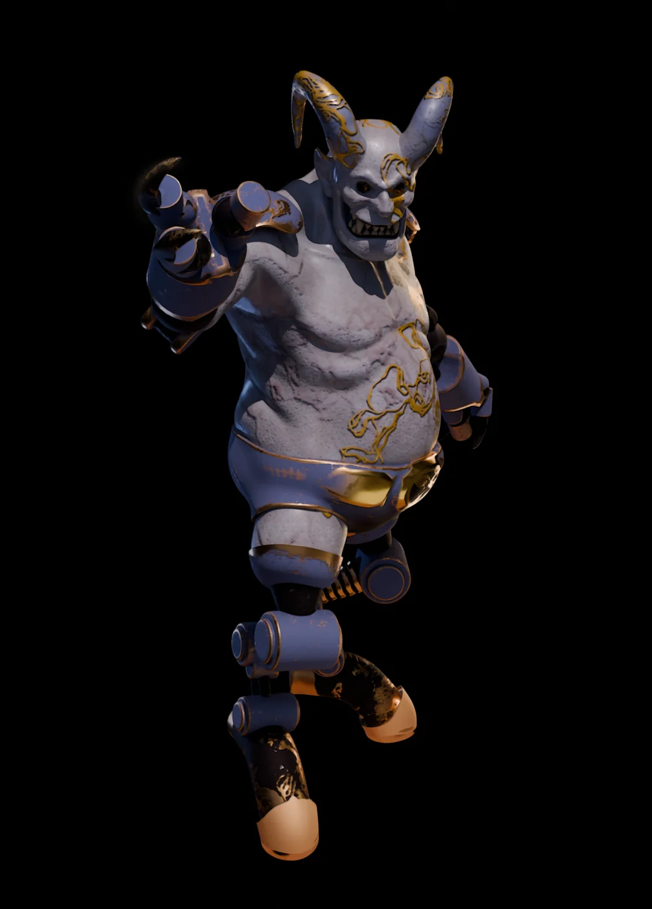
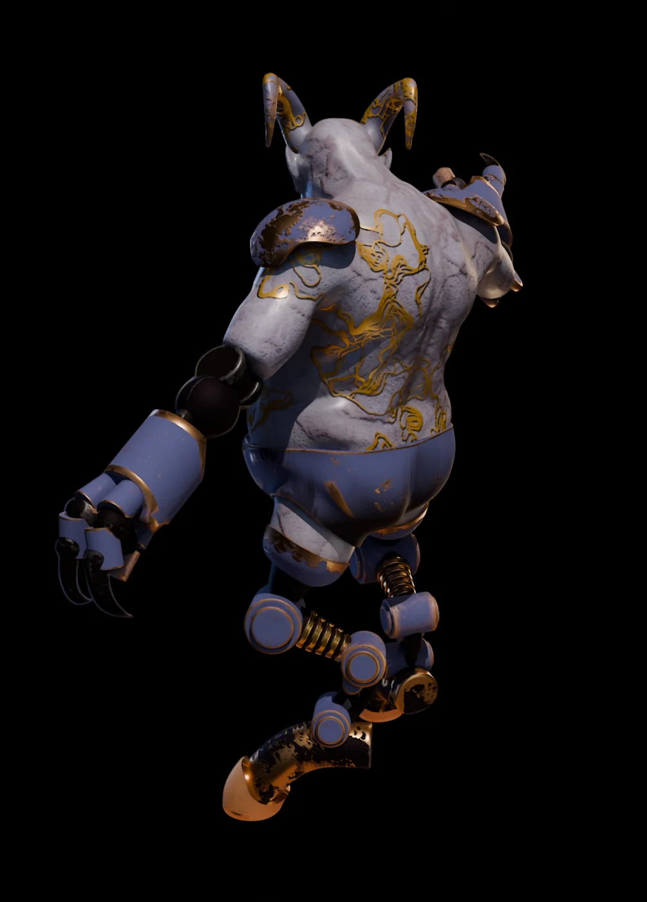
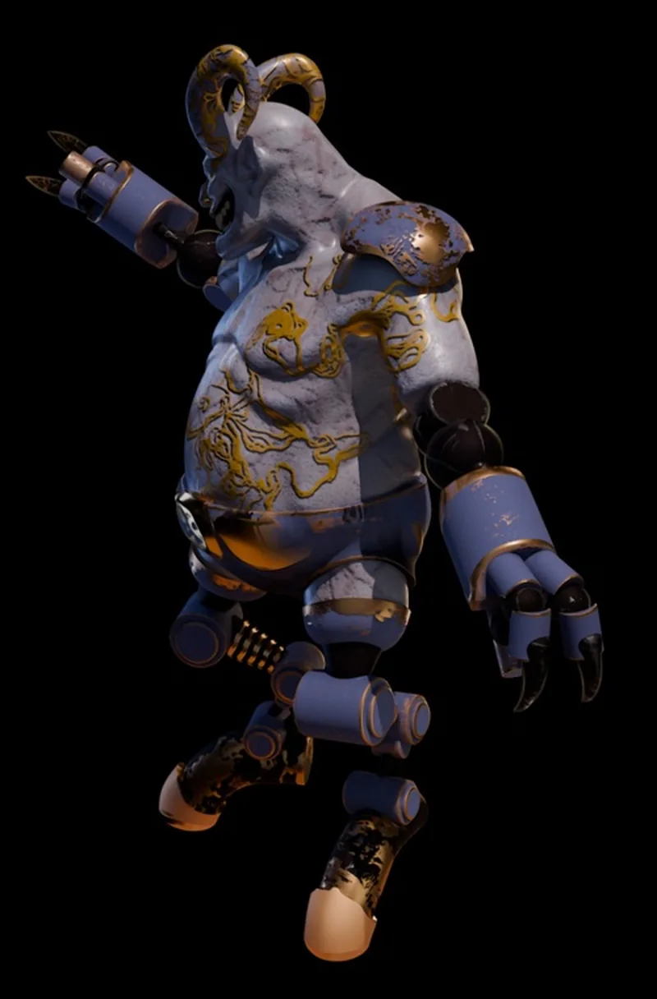
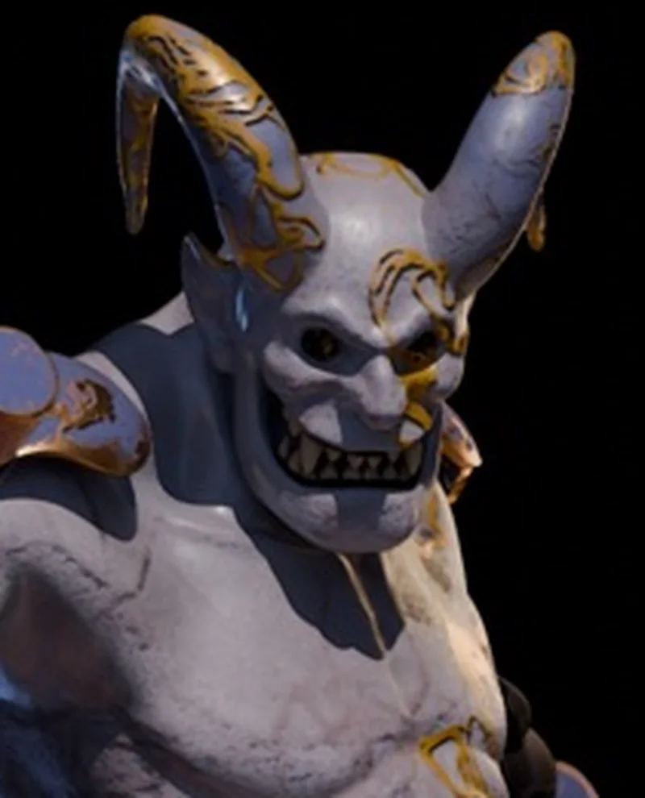
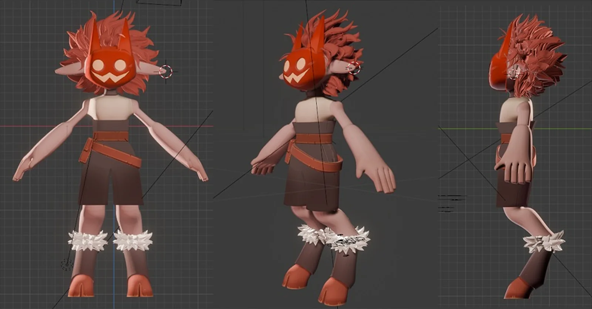
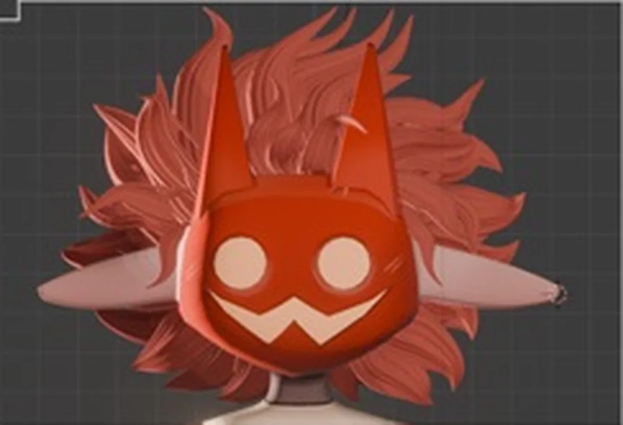
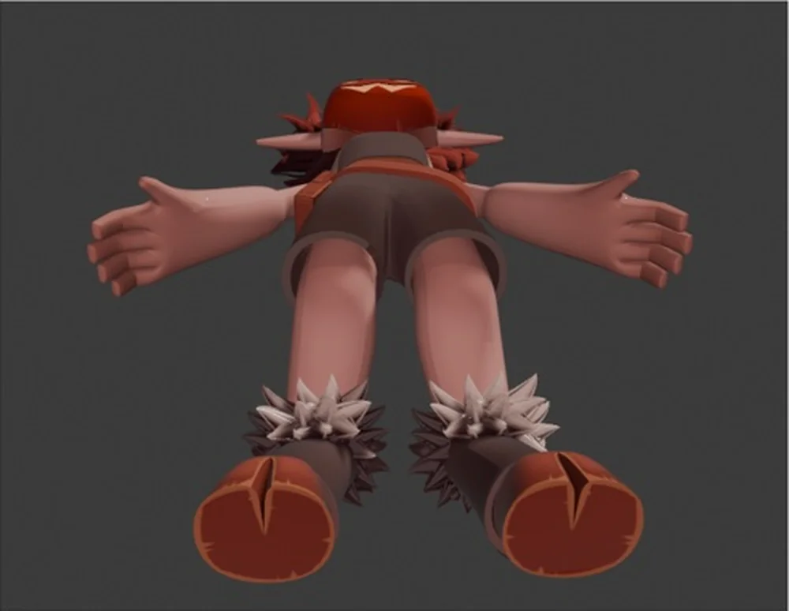

Characters
Two stylized characters: a stone-skinned demon automaton with mechanical limbs and gold ornament, and a masked imp translated from a 2D character sheet into 3D.Два стилизованных персонажа: каменный демон-автоматон с механическими конечностями и золотым орнаментом и маленький бесёнок в маске, переведённый из 2D-листа персонажа в 3D.

Stone, steel and goldКамень, сталь и золото
A heavy demon body in pale stone, joined to segmented mechanical arms and legs with springs at the joints. Gold veins run across the surface like repaired cracks.Тяжёлое тело демона из светлого камня, соединённое с сегментными механическими руками и ногами с пружинами в суставах. Золотые прожилки идут по поверхности, как заделанные трещины.




From a 2D sheet to a 3D modelИз 2D-листа в 3D-модель
A small stylized character with a carved red mask, wild hair, a belt pouch and furry ankle cuffs, modeled in Blender from a 2D character reference. Shown here in viewport while the final presentation renders are in progress.Маленький стилизованный персонаж с резной красной маской, взъерошенными волосами, поясной сумкой и меховыми манжетами на ногах, смоделирован в Blender по 2D-референсу. Здесь показан во вьюпорте, финальные рендеры готовятся.


